October 8 - 12, 2026 |
||
|
A little before 5 AM on the morning of Wednesday, October 7th, Mei-O an I hopped in our 2023 CR-V
and drove over to Teresa and Steve's house to pick them up to catch our 10:15 direct flight from Minneapolis to Tokyo, Japan
noteThe
following picture was taken at EZ-Air Park, our off-site parking lot for trips from MSP. It was too dark to take a picture at Steve and Teresa's house. .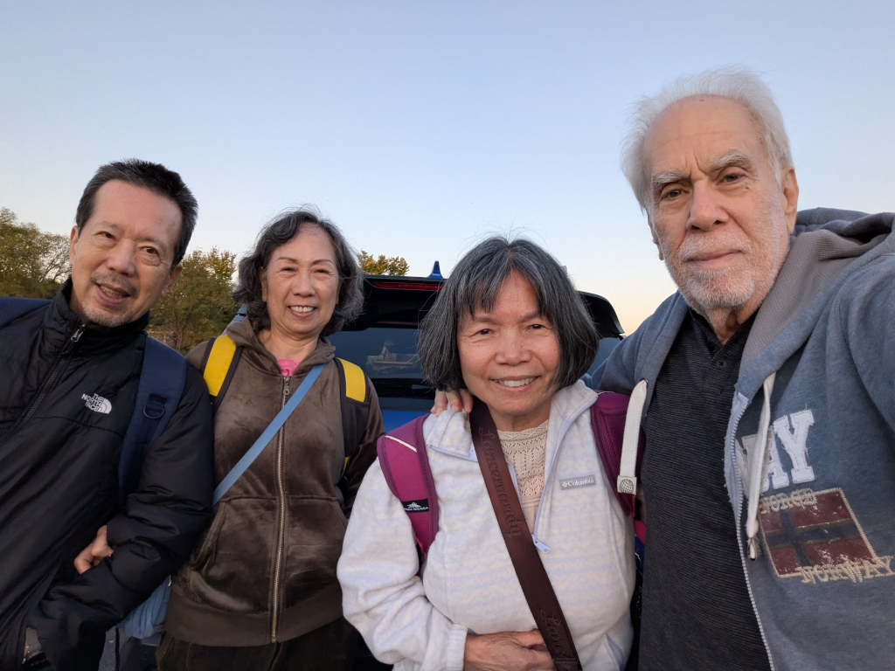 Tokyo would be our departure point for our "13 Night Circle Japan" cruise on Holland America's Westerdam beginning on Sunday, the 11th. but we decided to spend a few days in Tokyo before the cruise began. Thursday, October 8 We had a great 13-hour flight on a Delta Airlines Airbus A350-900, and arrived at Haneda Airport in Tokyo on October 8th around 2:30 PM their time, making it out of the airport to catch our prearranged ride to our hotel by 2:50. We proceeded to our hotel, the remm plus (sic) Ginza Hotel on the Ginza where we all needed to relax for a while. Our room on the 16th floor of the hotel was really small but comfortable. 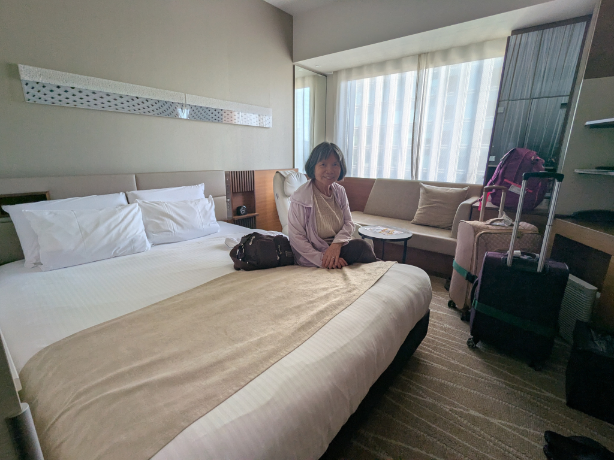 From our single window, we had a view of Tokyo Bay way off in the distance and this landmark tower looking the other way. Around 6:00, we met Steve and Teresa and went down to the hotel's pretty empty spacious Vietnamese restaurant for a decent dinner. We each had one of their ¥2,200 (around US$14.00) special dinners, which were pretty good. (I especially liked the Vietnamese spring roll with its plastic-like wrapper!) After dinner, it was time to do some exploring. So off we went, stepping out to the Ginza to get our first impressions of Japan. Afterwards, it was back to the hotel for some much needed rest. Friday, October 9 I woke up around 1:15 this morning, I suppose due to jet lag, and I immediately noticed this: 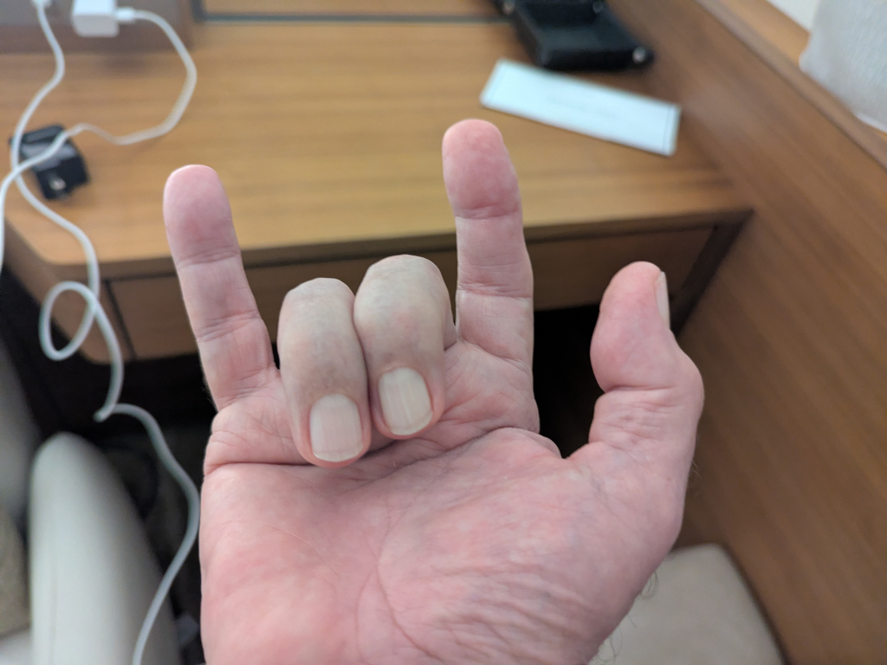 The third and fourth fingers on my right hand were bent inwards and frozen tightly noteLater I found out these were called
"trigger fingers." ! Not only couldn't I straighten them out normally, but I
couldn't move them at all applying pressure with my left hand! They didn't hurt unless I tried to move them or they accidentally bumped into something (they
were very sensitive.) I had a slight bruise on my ring finger knuckle, making me think when my hand hit the sidewalk on the Ginza last night, a
joint or nerve or muscle (or something else?) must've been bruised. I was hoping it would resolve itself quickly. In the meantime, my right hand was
basically useless; we'd continue on with our journey, and I'd do the best I could. I was able to go back to sleep for a while, but had to get up early
to catch a bus for our tour today.
About 6:45, we headed out to catch a bus for today's tour which included visiting Mt. Fuji, another "must see" when in Japan. 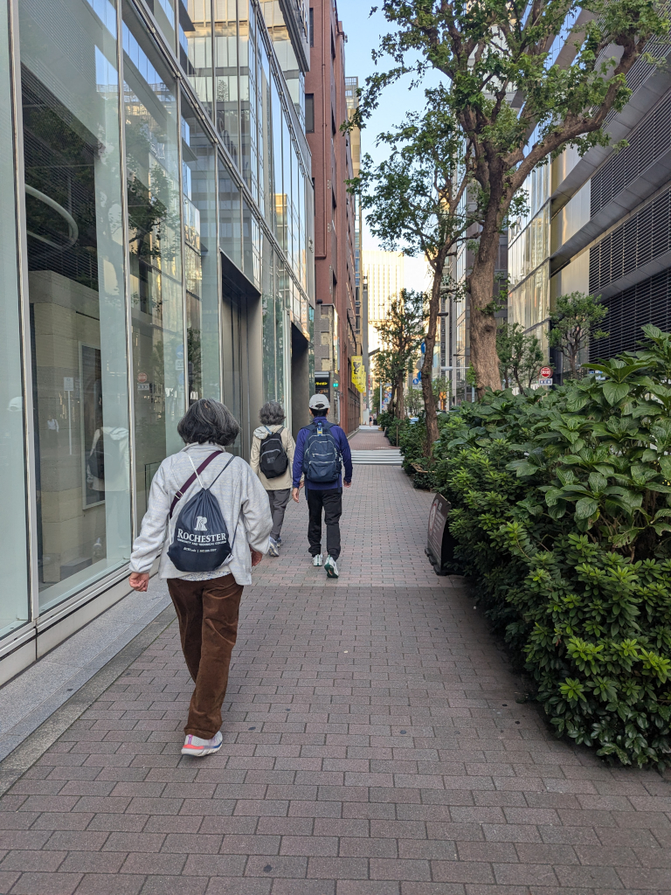 This morning, we found ourselves walking along the now empty Ginza for our 20-minute walk (with Teresa and Steve, of course) to the bus pickup point where several buses were waiting for several different tours. We got on the bus and quickly met our tour guide Natsuki (who would be using those white cards, as well as a dry-erase board, to teach us all some Japanese phrases all along our scheduled 8-hour tour.) Off we went; our first stop would be Mt. Fuji. Around 9:15, we got our first view of Mt. Fuji from the bus. 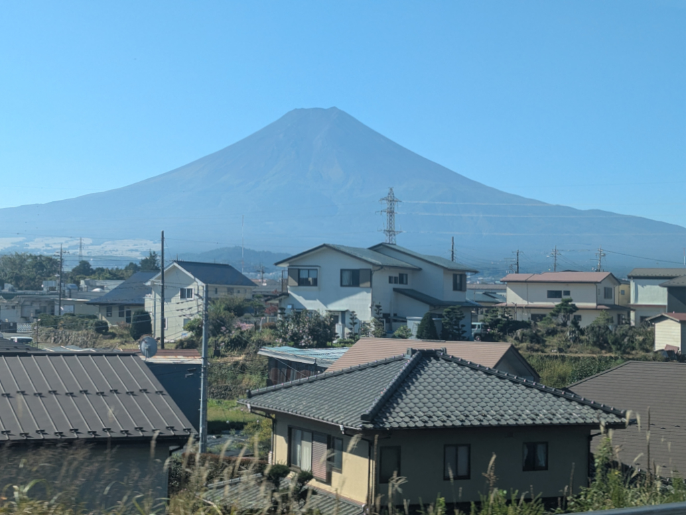 I think all four of us agreed that, based on pictures we had all seen of it with a snow-covered peak, its bland "greenness" was somewhat disappointing. Mt. Fuji has 10 climbing stations that are starting (or stopping) points for climbers. Our bus took us up to Station 5 (the most popular starting point for climbers going up to the top) where we'd be able to take some pictures - and shop. (Mei-O bought some water. We forgot our water bottles.) From up on the mountain itself, it seemed even less impressive, looking like a big hill. And views off in the distance from a viewing platform weren't that exciting either. We only had 40 minutes there; maybe if we had more time, we could've found some better views. But, hey, we can always say we've been to Mt. Fuji. By 11:30, we were at the restaurant where we'd be having lunch (included in the tour), the Ninja Village. 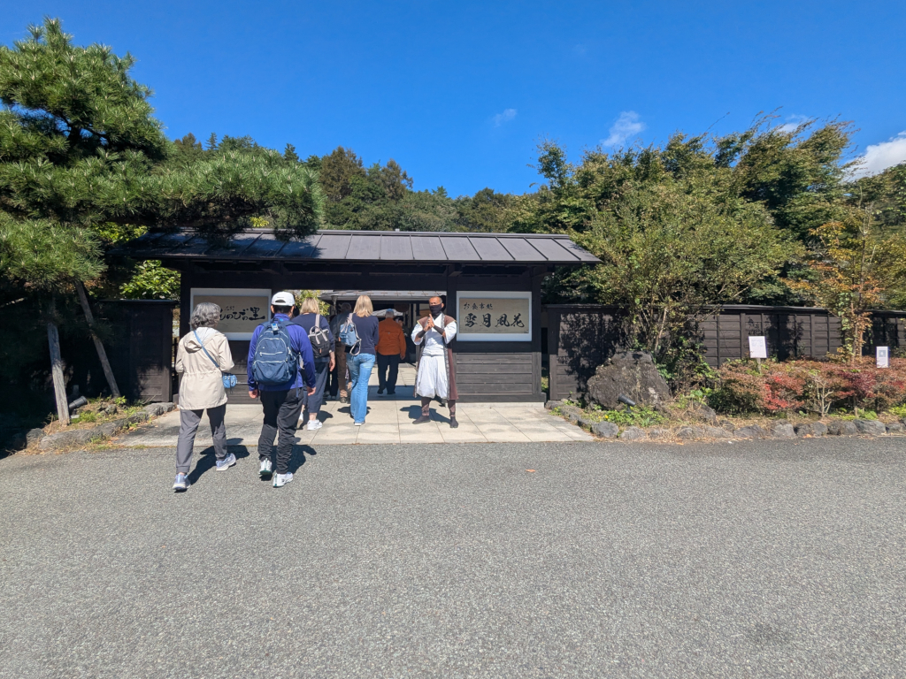 We were greeted as we entered by whatever this guy was (a ninja, I assume), entering the restaurant to find a really nice all-you-can-eat Japanese food buffet! I don't remember how many plates I had (I know I was trying to be conservative with our 13-day cruise coming up, so maybe not too many), but here's what one looked like. And it was all very good! (Incidentally, I might add, since my right hand was so messed up, I was unable to use chopsticks and barely able to use a fork!) Outside the restaurant, there was a Japanese garden with this sign in it note"This is the village where ninjas live in hiding. . Mt.
Fuji could still be seen off in the distance, and we were able to walk over to check out this Shinto
shrineIn order to become the best ninja, it is your job to constantly train. Don't be afraid, make an effort to complete your training. Chairman of the Ninja Tsukoda Saizo" noteFrom Wikipedia: "The red gates at Shinto shrines are called torii (鳥居). They mark the transition between the ordinary physical
world and the sacred space of a shrine and act as a threshold, signifying that you are entering a pure and sacred area dedicated to the kami (Shinto spirits or
gods)." , though we didn't have enough time to walk through the gates. By the time we returned to the bus,
I was feeling pretty bad; I noticed the knuckle of my triggered fourth finger was getting red, and the
bent fingers and pad on my right hand were swelling up. I didn't feel like continuing on, but obviously had no other choice.
That was definitely not a good sign. Anyhow, off we went to our next stop...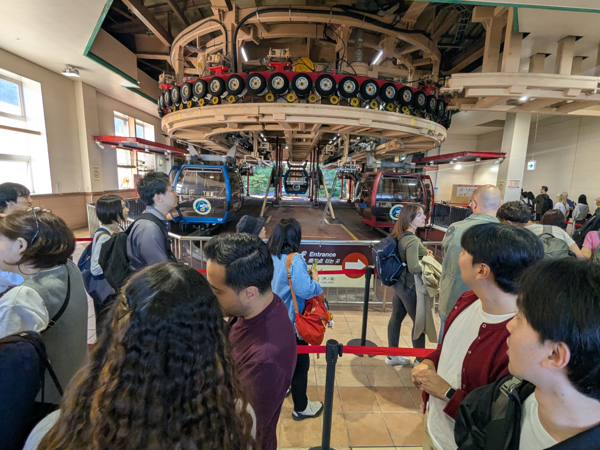 ...the Hakone Ropeway, a cable car ride up and right back down a mountain, just a short ride returning to the same station we departed from, passing over some steam vents coming out of the ground along the way noteWe were originally supposed to pass over the mountain and come down on the other side,
disembarking at our next tour stop, but for some reason, that plan changed. We'd now be taking the bus there. . The ride from one station to
the next and right back down wasn't very long. At the first stop, Owakudani, we got off the cable car and walked
over to a line to get right back on another one, never leaving the station, with no place or time to view any
scenery or take any pictures. Back down we went to catch our bus to our next tour stop.
After about a 20 minute bus ride, we stopped at Lake Ashinoko where we were to board a "pirate ship" for a cruise along the lake. 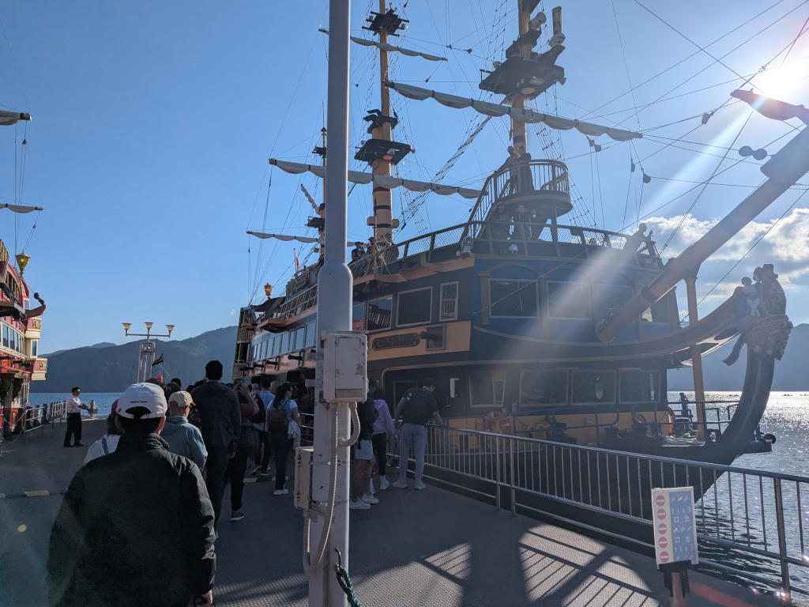 The ship was so crowded, we could hardly find a place to stand and had to fight our way to the rail to even get a picture or two of the somewhat boring lake. Soon we returned to shore (the cruise was only about 25 minutes long), got back on our bus in the parking lot, and waited to head out to our final tour event (one we were looking forward to.) Our tour ended at the Odawara bullet train station where our tour guide left us with instructions how to take the train back to Tokyo on our own. 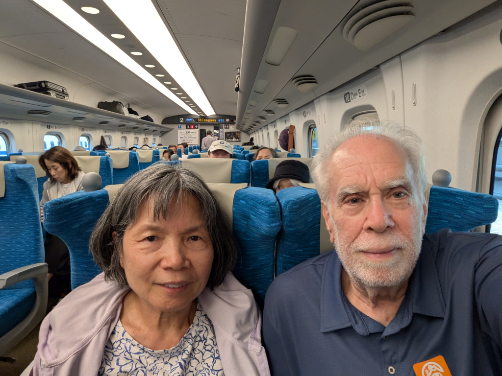 Off we went for a fast ride (0:25) - very smooth, quiet, and comfortable - back to somewhere in Tokyo. They way I felt - my mind wasn't working 100% - I was counting on Teresa, Steve, and Mei-O to get us all back to the hotel safely. When we pulled into the stop where we needed to get off, I felt a little more relaxed, though now, the hard part was about to begin. We were in Tokyo's very crowded main train station, and we needed to find the right subway line to take us back to the hotel, buy the right tickets at an automated kiosk, then find the right platform where we could board the train. Like a little puppy, I followed the others as we walked all around the station, sometimes retracing our steps trying to find the right line, eventually buying tickets with some help from a subway worker, and finally getting on the subway towards home. I was exhausted, my hand was making me feel terrible, both physically and mentally, so when we got off the subway, I was hoping we were close to the hotel, but we weren't. After getting off the subway, we still had a fairly long walk home along the streets of Tokyo. These were the last pictures I have of Friday, the 9th. I was quite happy to crawl into bed with my messed up hand and quickly fall asleep. I think the others were also tired (it was a long day), but not suffering the way I was. And I felt miserable about how my discomfort was making Mei-O feel. I was beginning to worry about my ability to join our upcoming cruise. Saturday, October 10 We had another self-guided tour planned out by Teresa for this morning, but first, we had to partake of the hotel's very yummy breakfast buffet. There were a lot of choices, and being a buffet made us all happy. 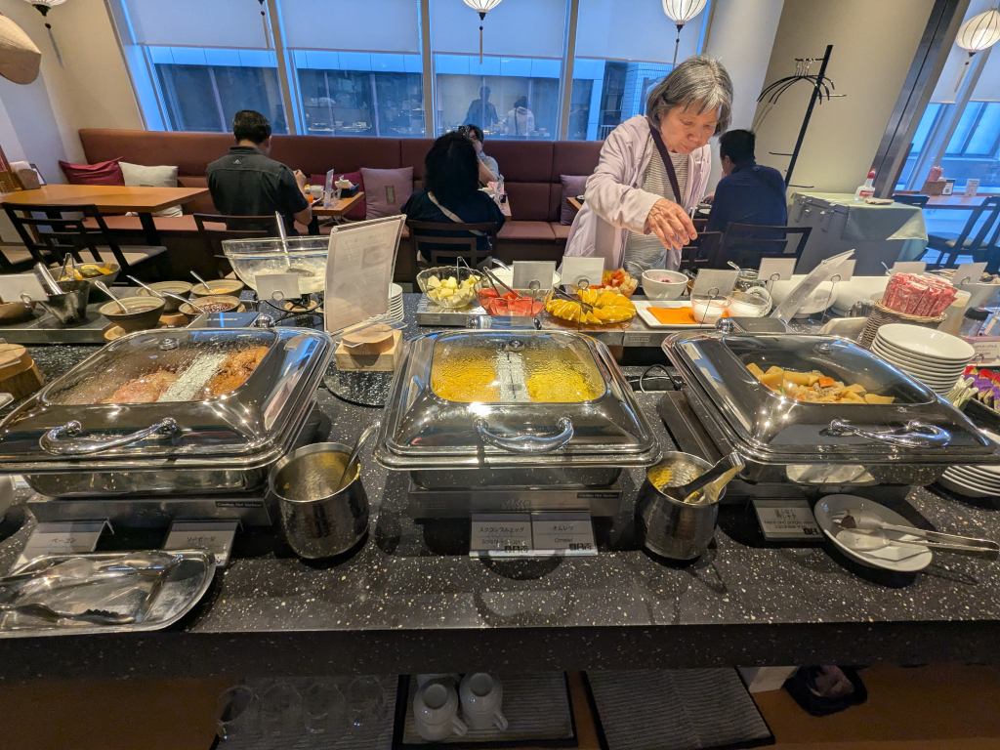 Even after last night's bad experience in the subway noteLast night we were in Tokyo's Main Train Station which is well-known for being huge, very hard
for foreigners to navigate their way around it. Today we'd be using smaller, local stations which we hoped would be easier. , we decided to take the subway
to our first stop of the day. A little before 9:00, we left the hotel and headed out down the empty Saturday morning streets
to the nearby Shimbashi Station, which Teresa and Steve figured out would be the best place to start from. We were headed for
Asakusa, an historic district in Taito City, Tokyo, best known for preserving the nostalgic atmosphere of Tokyo's old
downtown. Down in the not-very-busy subway, Steve and Teresa got busy buying the tickets
we'd neednoteWe got help from a subway worker, the guy in the picture walking away in the blue uniform. .
We got to the right platform and didn't have to wait too long for our train. And by 9:45, we arrived in Asakusa and quickly followed the crowd to what appeared to be a temple gate. Notice the rickshaw in the picture below. 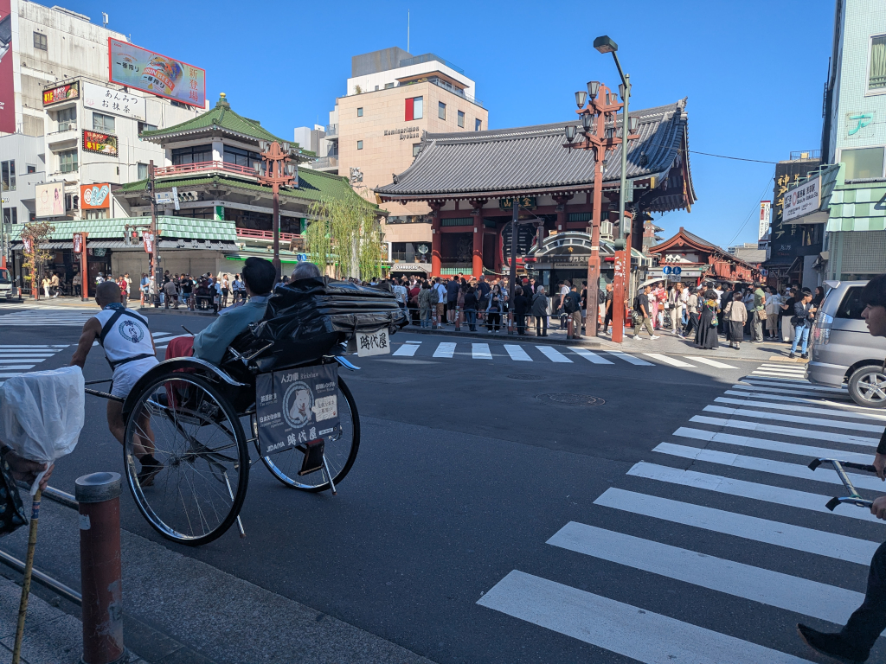 (As much as I could, I tried to enjoy myself, but you can tell by the look on my face....) The main thing we came to see was the Sensō-ji, the oldest Buddhist temple in Tokyo noteKnown throughout Japan, it is the temple of Avalokitesvara Bodhisattva (Sho Kanzeon Bosatsu), who embodies
the mercy of all Buddhas. This important center of religious faith draws 30 million worshipers every year. Mei-O knows it as 雷門寺 (雷門 is the name of the first gate leading to
the temple), a temple honoring 觀音, the Bodhisattva her mother prayed to. . Here are a bunch of pictures of the area of Asakusa leading to the temple, and the temple itself. When we were done seeing all we wanted to see (I think we all had
enough of the big crowds), we headed back to the Asakusa Station to catch a train to our next stop, Shibuya Station, once again getting
help purchasing our tickets from a friendly subway agent.
Unlike the Ginza shopping area or Mt. Fuji, the famous Shibuya Scramble Crossing is probably not a "must see" tourist attraction (or maybe it is), but I wanted to see it and so did Teresa who arranged all our activities, so we ended up there. The all-direction-at-once intersection crossing has been described as "the world's busiest pedestrian crossing, with 1,000–2,000 people crossing during a single green light cycle. Originating in 1973, the intersection is a popular tourist destination and a widely recognized symbol of the city of Tokyo through its frequent appearances in television, film, and other media." noteFrom Wikipedia, "Shibuya Crossing."
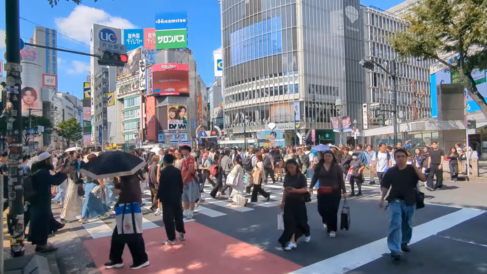 When we first got there, we just stood at one corner and watched the crowd (0:36) as their turn came to cross any which way they pleased, then proceeded to a mall where we got a good view (0:58) from above. It's pretty cool how the crowd magically clears up so vehicle traffic can resume. Heading back to the hotel, the ride from the Shibuya Station to the station where we got off took about 40 minutes, arriving around 1:30. We walked through a neighborhood with many restaurants lining the street, many of them with lines of people waiting to get in, Steve and Teresa leading the way. (I think we were lost.) After several false starts walking in the wrong direction, we finally got back to the hotel following the GPS route on my phone. I was really exhausted and my spirit was broken, so after two days of misery, walking around with my hand so messed up, sitting in our room this second day of our vacation in Japan, Mei-O and I made a major decision: We were going to go back home as soon as possible. I didn't want to spend time in a Japanese hospital and I certainly didn't think the cruise ship's doctor would be able to fix me (by now, I realized this was a pretty serious injury which wasn't going to go away on its own), so I went to Delta Airlines' website and changed our departure date from our original date, October 24th, the day our cruise was to end, to Monday, the 12th, just two days from todayMe being so tired and feeling miserable, Mei-O and I decided to stay at the hotel this evening while Steve and Teresa went off to some event we all signed up for. We'd forfeit the 60-some dollars we paid for our tickets and just chill, something I needed badly. Eventually needing dinner, we left the hotel and headed to the corner Family Mart, a convenience store like 7-Eleven that could be found everywhere (there were two within a 3-minute walk from our hotel) to pickup something fast and easy that we could eat in our hotel room. We decided on some sandwiches. Not traditional Japanese food, of course, but we just wanted to eat something and I didn't feel like going to a fancy restaurant, and for only ¥415 ($2.63) each, these looked good: egg salad, ham with lettuce, and tuna salad, all on a very soft bread, and all very good. After our dinner, it was off to bed. Sunday, October 11 The original plan for today was for the four of us to head out to the nearby fish market early in the morning (before it got too crowded) for breakfast, but we (I) didn't feel like going, so Mei-O and I stayed in the hotel and had breakfast there. 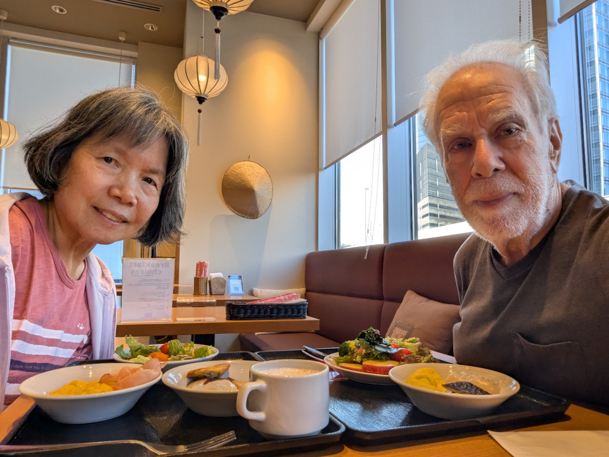 After breakfast, after sitting around our room for a while, around 11:00, deciding we didn't want to just sit around there all day, we decided to take a walk over to the fish market. As we began our walk, we came across the "Don Quijote" store (open 24 hours!) It looked interesting, and there were a lot of people in there shopping on a Sunday morning, so we popped in to look around. The aisles were tightly packed with all sorts of stuff; we left without buying anything. As we continued on, following my GPS to the fish market, we came across a bridge over a wide road. There was an elevator which we were able to take onto the bridge where we were able to get a good view in both directions. We left the bridge, and by 11:30, we arrived at the Tsukiji Nippon Fish Port Market. It was exceptionally crowded (that's the reason Teresa and Steve wanted to go early, before the crowds showed up. We should've gone with them), and once again, we found our self fighting our way through the sea of people. Here are some more pictures from the busy fish market. We left the fish market, returned to our hotel, and just relaxed the rest of the day. We had Steve and Teresa come over to our room and told them about our decision to leave the next day, and while they were disappointed, they supported it. The four of us had cruised together many times in the past; this opportunity was now lost thanks to my clumsiness. We would miss the Japan cruise, something we'd been looking forward to for almost a year, but my physical (and mental) health was more important. When dinnertime came around, once again, we just wanted to eat something fast and easy in our hotel room, so we went back to Family Mart and bought some goodies, 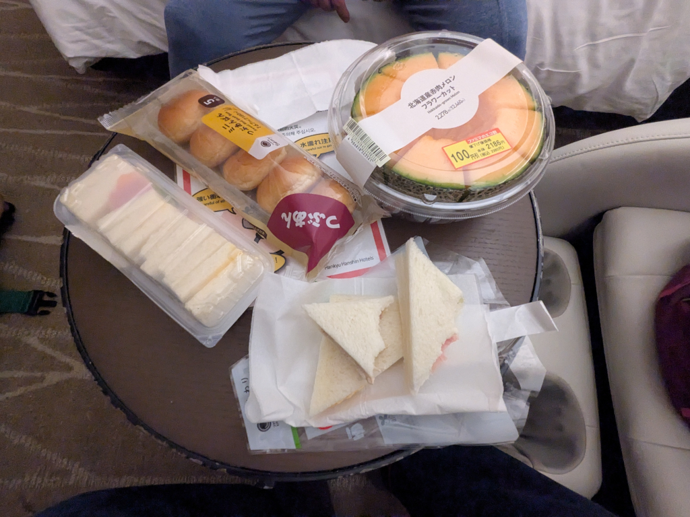 some more of the same sandwiches we had last night, some buns stuffed with red bean paste, and half of an expensive cantaloupe. We mistakenly took the big "100" on the price tag as the price, ¥100 noteIf we would've thought about it, ¥100 is just 63¢, and we should've known that couldn't be
the price of half of such a big cantaloupe. . It was most likely sold by weight, and the actual price, after a discount of some sort (on sale?) and including tax was
¥2,000noteWhich I got by running the price tag , about $12.67! Yikes! (It was good, but not $12 good!)
円引 税込 2000円 through an image to text converter. On our last night in Tokyo, before going to bed, I took a few pictures of the view from our 16th floor hotel window. 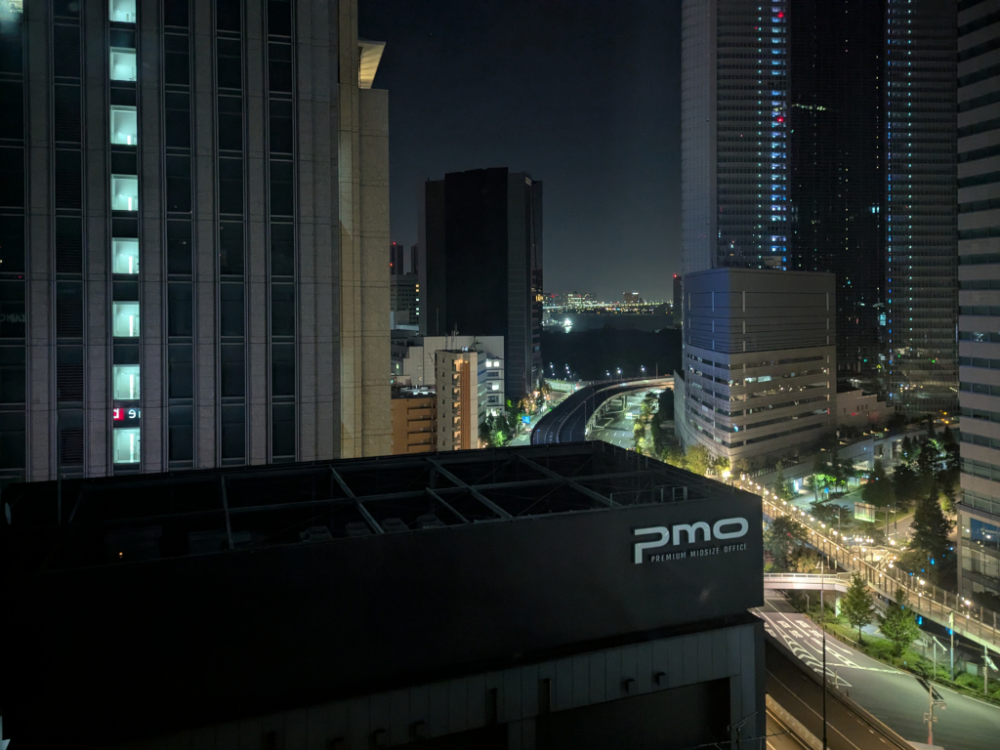 We'd be leaving tomorrow, heading back to Rochester and the Mayo Clinic emergency room, leaving our 13-day Japan cruise behind. As the always optimistic Mei-O says, "At least we got to see the Ginza, Mt. Fuji, 雷門寺 (the temple honoring 觀音), and ride the bullet train." I might add Shibuya Scramble Crossing. Monday, October 12 Our flight didn't leave until 4:05 PM. We had to checkout of the remm plus Hotel by 11:00, so we had breakfast in the hotel's restaurant, then checked out and went out to the street to catch a taxi to Haneda Airport, Terminal 3 noteI prepared this on
my phone to show to the taxi driver. . It was easy to get a taxi, and by 10:00, we were on our way to Haneda, just about 25 minutes away. We knew we were going
to be there way early, but that was okay. We'd pass the time there.
Fortunately, we were able to check our luggage quite early, around 11:45 (we were the second ones in line at the ticket counter), and got through security quickly, so we walked around the big airport before going to our gate. There was an upper level consisting mainly of what appeared to be really nice restaurants and, of course, souvenir shops, lined up to look like food alleys, and a very nice observation deck where we sat and watched planes (0:23) for a while. When we came back in, as we were headed to find our gate, we came upon a big surprise! 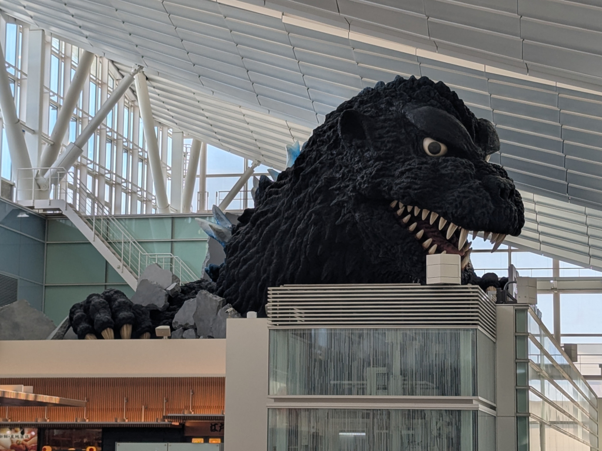 The king of the Japanese monsters, Godzilla, looked down from above us for a great photo op. When we did get to our gate, we found out our flight was delayed for 55 minutes, now leaving at 5:00. I took a final picture of Tokyo and a picture of the two airport control towers as we settled in to wait. And soon, we were on board and on our way home. 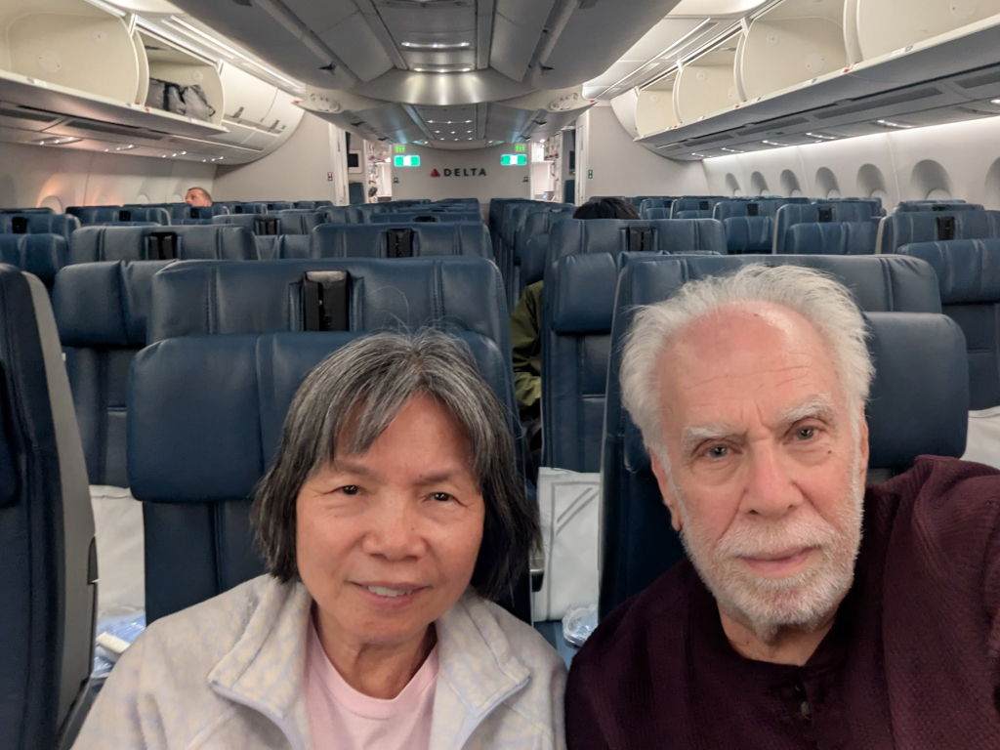 An hour and a half into the flight, we got served a better-than-usual in-flight-meal, sea bass! Then it was lights out for another nine hours or so before landing at MSP. It was a quick ride to EZ-Air Park, the off-site parking lot where our car was parked, then about a 1½ hour ride to the Mayo Clinic emergency room to have my hand looked at - and my fingers very painfully straightened. By 11:00 PM, we were finally home. And that's the end of our Japan trip story, 東京での5日間, Five Days in Tokyo. The complete story of my hand is another story - a quite painful one - but ending successfully after hand surgery on Monday, the 26th and a few weeks to fully recover. We certainly had a lot of memories from this trip, unfortunately, mostly bad ones. Sayonara! Back to the Main page. |